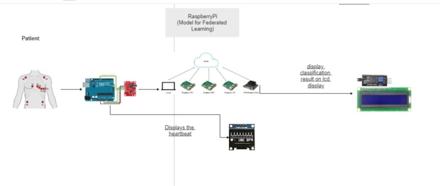

Automated and Preventive Cardiovascular Disease Diagnosis System
The World Health Organization (WHO) reported that cardiovascular diseases account for 40% of total deaths in Egypt1 ; cardiovascular diseases are a major public health concern with significant social and economic implications in terms of healthcare -needs, lost productivity, and premature death. The disease burden caused by cardiovascular diseases is further fueled by the adoption of unhealthy lifestyles and eating habits. The incidence of cardiovascular diseases is fast shifting to the youth; a trend that’s specifically prevalent in the capital city of Cairo and underserved urban communities where fast food and sedentary lifestyles are an increasing reality. This in turn makes cardiovascular diseases a great threat to health infrastructure locally and internationally. According to Egyptian vision 2030, healthcare is one of the main pillars to achieve sustainable development and to improve Egyptians' life quality. Therefore, cardiovascular diseases can prohibit the sustainable development process in the Egyptian healthcare system.
